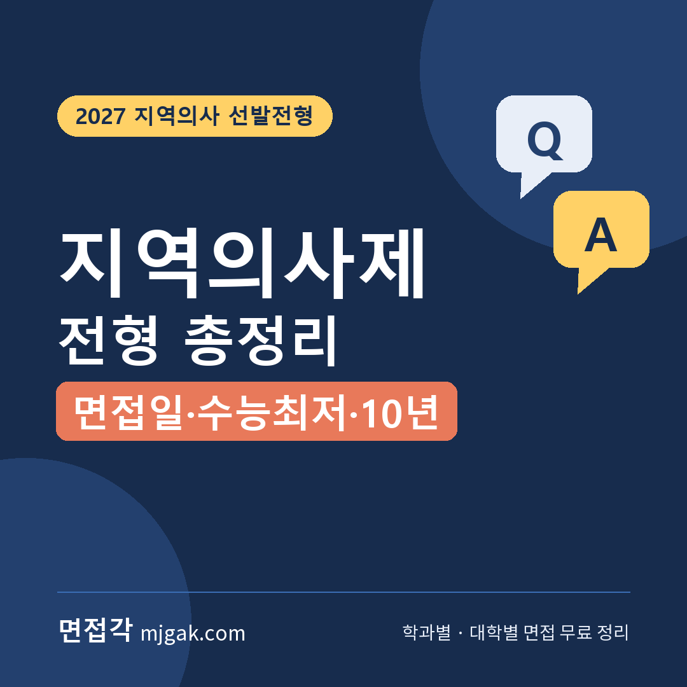
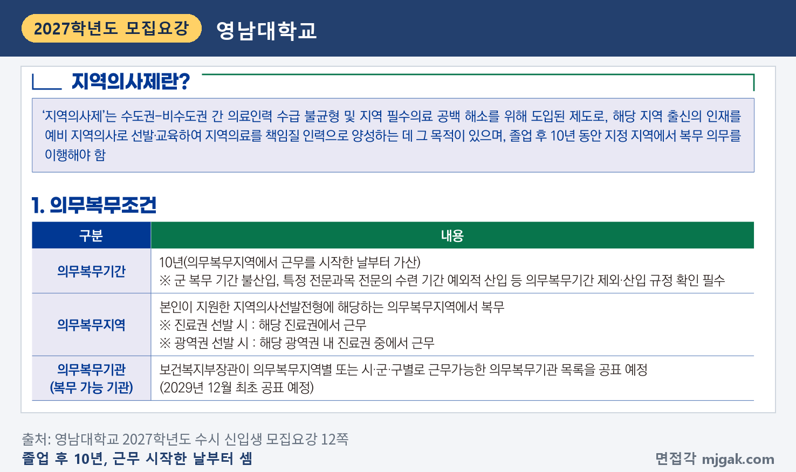
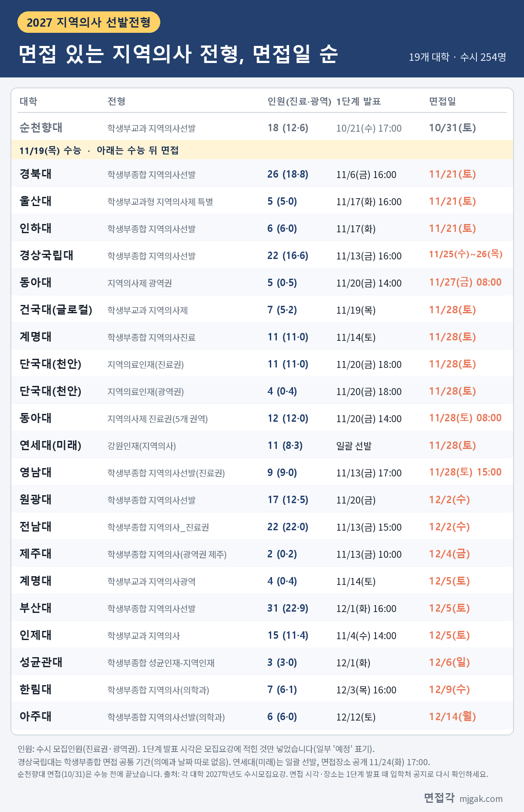
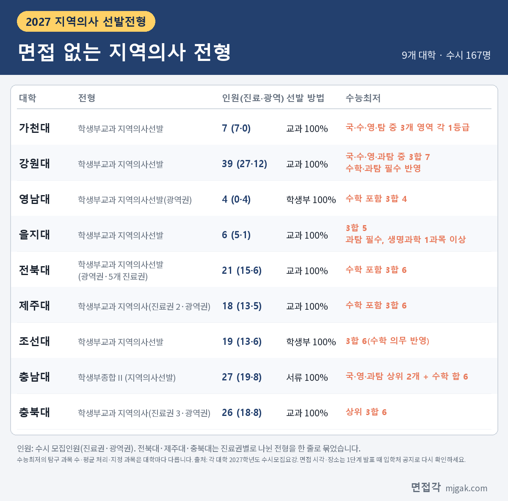
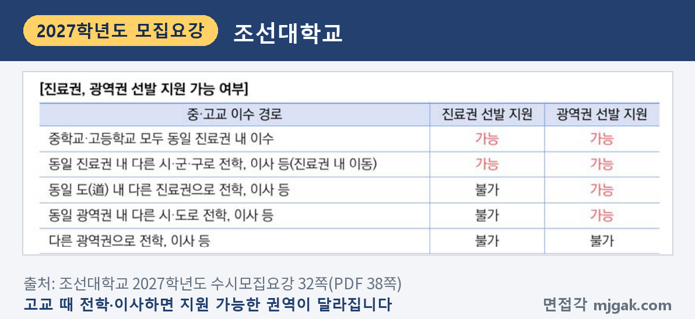
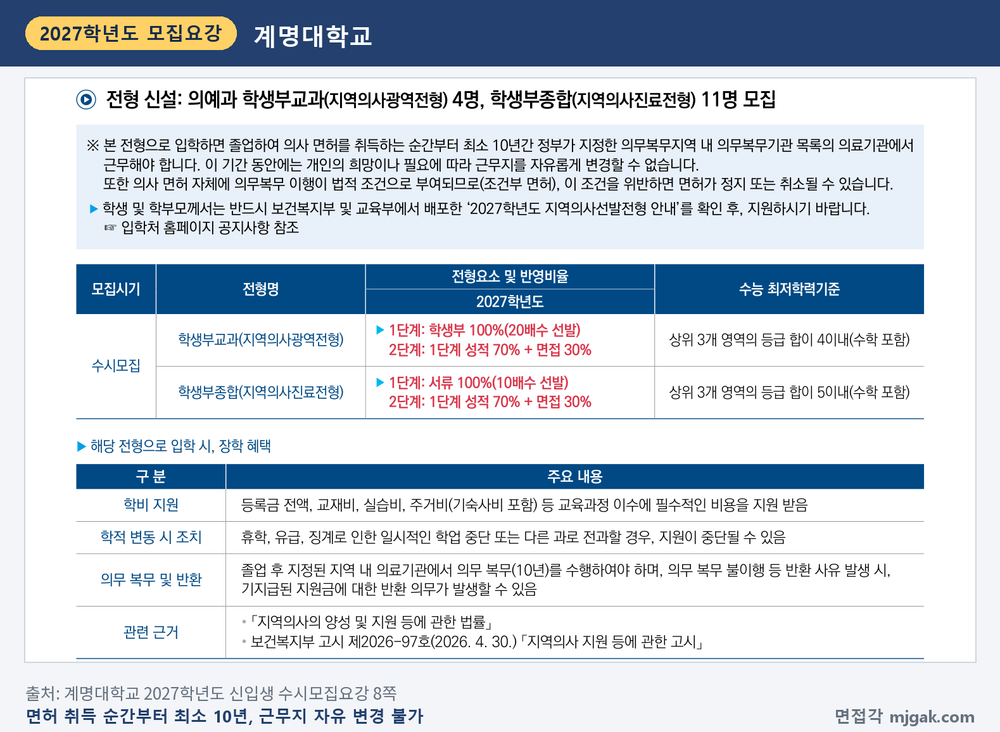
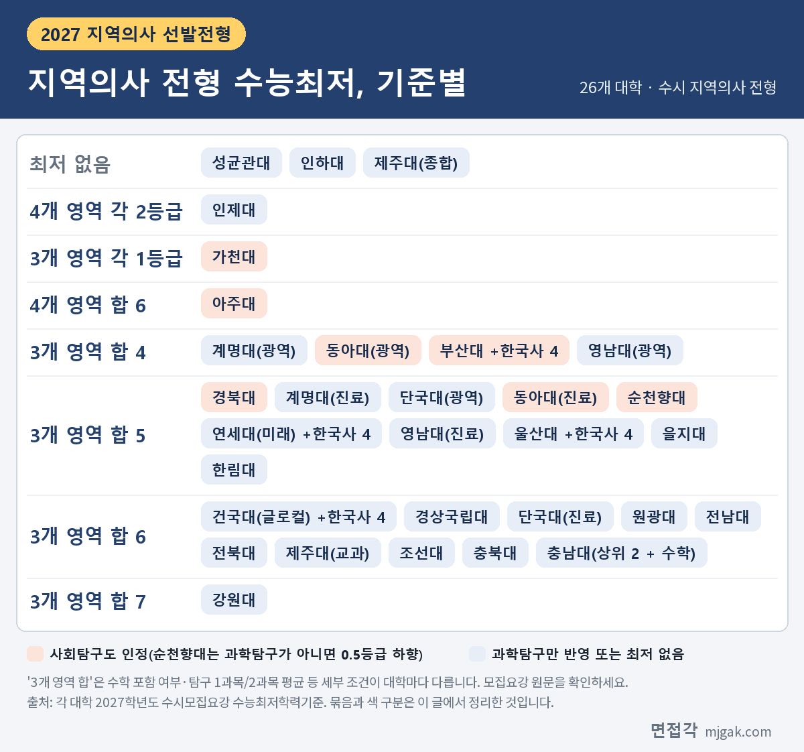
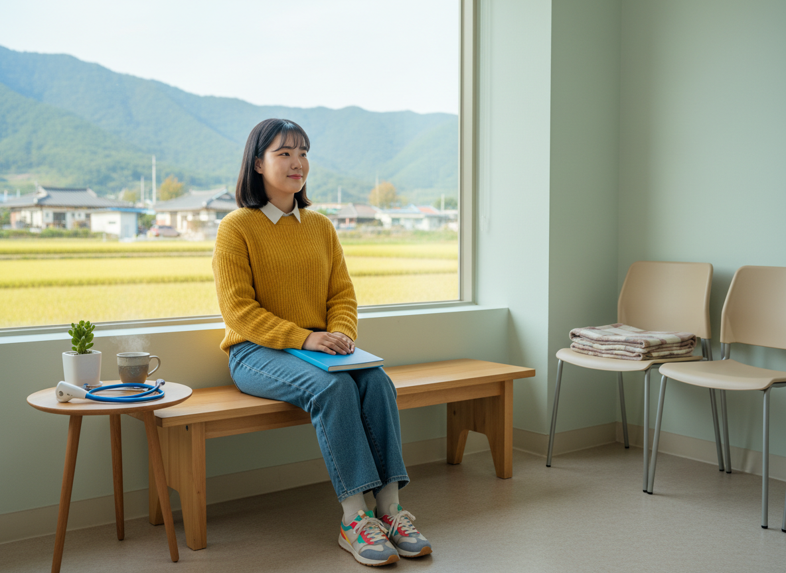
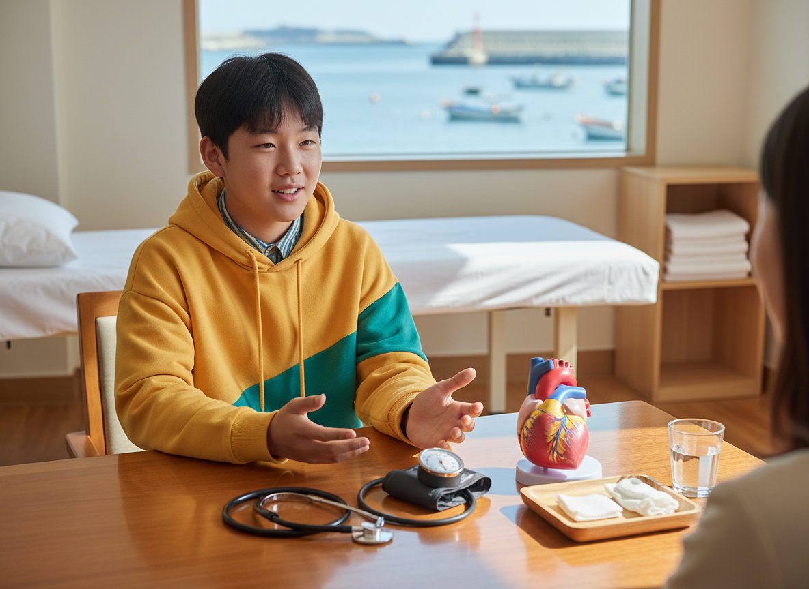

Ctrl+V (서식 유지됨)제목
본문 (이 영역 전체가 복사됩니다)
📷 여기에 이미지 넣기 — 썸네일 — thumb-rdoc.png (대표 이미지로 지정)
2027학년도 의대 수시에는 처음 시행하는 전형이 있습니다. 의사 면허를 받은 뒤 정해진 지역에서 10년 동안 일하는 조건으로 뽑는 지역의사 선발전형입니다. 이름은 같아도 대학마다 지원할 수 있는 지역, 면접 여부와 날짜, 수능최저, 의무복무 안내 문장이 다릅니다. 면접각은 각 대학 2027학년도 수시모집요강 원문으로 26개 의대의 지역의사 전형을 확인했습니다. 이 글은 면접이 있는 19개 대학을 면접일 순으로, 면접이 없는 9개 대학을 따로 정리하고, 지원 자격·의무복무 조건·수능최저를 모집요강 문장으로 비교합니다. 지역의사 전형에 원서를 낸 고3과 재수생, 학부모님, 2028학년도 지원을 생각하는 학생이 읽으시면 됩니다.
1. 지역의사제, 모집요강에는 이렇게 적혀 있습니다
📷 여기에 이미지 넣기 — 캡처 1 — 영남대학교 2027학년도 수시 신입생 모집요강 12쪽: yu-2027-rdoc-define.png
영남대 모집요강은 지역의사제를 지역 필수의료 공백을 해소하려고 도입한 제도로 소개합니다. 해당 지역 출신 인재를 예비 지역의사로 선발·교육하고, 졸업 후 10년 동안 지정 지역에서 복무하게 한다는 설명입니다(12쪽). 근거 법은 「지역의사의 양성 및 지원 등에 관한 법률」(지역의사법)입니다.
여러 대학 모집요강이 같은 네 가지를 안내합니다. ① 대통령령으로 정하는 지역에서 10년간 복무하는 조건으로 의사 면허를 받습니다(제7조). ② 입학금·수업료·교재비·기숙사비 등을 지원받습니다(제5조). ③ 휴학·유급·정학·전과 때는 지원이 멈춥니다. ④ 제적·자퇴, 졸업 후 3년 안에 의사 국가시험에 합격하지 못하면 지원받은 비용을 모두 돌려줘야 합니다(제6조). 부산대(37쪽), 울산대(18쪽), 인하대(16쪽) 모집요강에 같은 내용이 있습니다.
▶ 언론 보도의 490명과 이 글의 421명이 다른 이유
한국대학신문(2026년 3월 13일)은 교육부가 2027학년도 의대 정원을 2024학년도보다 490명 많은 3,548명으로 확정했고, 늘어난 인원은 모두 지역의사제로 뽑는다고 보도했습니다. 경향신문(2026년 4월 30일)은 서울을 제외한 32개 의대가 490명을 지역의사 선발전형으로 뽑고, 전체 선발 인원의 70%는 진료권, 30%는 광역권에서 뽑는다고 전했습니다.
면접각이 확인한 26개 대학의 수시 모집인원을 더하면 421명(진료권 312명, 광역권 109명)입니다. 490명과 맞지 않는 이유는 두 가지입니다. 첫째, 가톨릭관동대·건양대·고신대·대구가톨릭대·동국대(WISE) 5곳은 모집요강 원문을 확보하지 못해 빠졌습니다. 차의과학대는 학부 수시모집요강에 의예과·지역의사 전형이 없었습니다. 둘째, 이 글은 수시 인원만 셌습니다. 경향신문의 대학별 인원과 비교하면 강원대·부산대·충남대·경북대·경상국립대·전북대는 수시 인원과 같고, 충북대(보도 39명, 수시 26명)·전남대(31명, 22명)·제주대(28명, 20명)는 수시 인원이 적습니다. 이 차이가 정시 인원인지는 정시모집요강을 보지 않아 확인하지 못했습니다. 참고로 수시 미충원 인원을 정시로 넘긴다고 적은 대학도 있습니다(아래 자주 묻는 것들).
진료권과 광역권 비율도 수시 기준으로는 약 74 대 26입니다. 가천대·성균관대·아주대·인하대·울산대·전남대는 수시에 광역권이 없습니다.
2. 면접 있는 지역의사 전형, 면접일 순
📷 여기에 이미지 넣기 — 이미지 1 — rdoc-table-1.png
19개 대학이 지역의사 전형에서 면접을 봅니다. 가장 이른 순천향대는 10월 21일(수) 17시에 1단계를 발표하고 10월 31일(토)에 면접을 마쳤습니다. 수능(11월 19일) 뒤 첫 면접은 11월 21일(토) 경북대·울산대·인하대입니다. 11월 28일(토)에는 건국대(글로컬)·계명대(지역의사진료)·단국대(천안)·동아대(진료권)·연세대(미래)·영남대(진료권) 6개 대학이 면접을 봅니다. 가장 늦은 아주대는 12월 12일(토) 1단계 발표, 12월 14일(월) 면접입니다.
순천향대를 포함해 10개 대학은 1단계 발표가 수능 전입니다. 인제대 11월 4일(수) 14시, 경북대 11월 6일(금) 16시, 경상국립대·영남대·전남대·제주대 11월 13일(금), 계명대 11월 14일(토), 울산대·인하대 11월 17일(화)이고, 건국대(글로컬)는 수능 당일인 11월 19일(목)입니다. 연세대(미래)는 서류 80%와 면접 20%를 한 번에 합산하는 일괄 전형이라 1단계 발표가 없고, 면접장소를 11월 24일(화) 17시에 공개합니다(40쪽).
같은 지역 출신이 함께 지원할 수 있는 대학끼리 면접일이 겹치기도 합니다. 부산·울산·경남은 부산대와 인제대가 12월 5일(토), 충청권은 건국대(글로컬)와 단국대(천안)가 11월 28일(토), 대구·경북은 계명대(지역의사진료)와 영남대(진료권, 15시)가 11월 28일(토), 호남은 원광대와 전남대가 12월 2일(수)입니다. 두 곳 모두 1단계에 합격했다면 발표 때 공지되는 면접 시각부터 확인하세요.
3. 면접 없는 지역의사 전형
📷 여기에 이미지 넣기 — 이미지 2 — rdoc-table-2.png
가천대·강원대·을지대·전북대·조선대·충남대·충북대는 지역의사 전형에 면접이 없고, 영남대와 제주대는 학생부교과 쪽만 면접이 없습니다. 모두 9개 대학, 수시 167명입니다. 충남대 학생부종합Ⅱ(지역의사선발)는 서류평가 100%(38쪽), 나머지는 학생부(교과) 100%로 한 번에 뽑습니다. 이 전형들도 모두 수능최저를 적용합니다.
4. 지원 자격: 중학교 입학부터 그 지역에서
이 글의 26개 대학 모두 중학교 입학부터 고교 졸업까지 해당 지역 학교를 다니고, 재학 기간에 그 지역에 살았을 것을 요구합니다. 중학교와 고교의 기준 지역을 다르게 정한 곳이 있습니다. 부산대는 중학교를 부산·울산·경남, 고교를 지원한 광역권 또는 진료권으로 정했습니다(37쪽).
대학마다 다른 점도 있습니다. 아주대는 중학교·고교 소재지와 거주지가 "모두 동일한 진료권"이어야 한다고 적었고(16쪽), 인하대도 같은 조건입니다(16쪽). 성균관대는 중·고교가 같은 시·군이 아니어도 모두 지원한 모집권역 안에 있으면 인정합니다(30쪽). 조기졸업도 다릅니다. 아주대는 조기졸업자를 포함하고(16쪽), 연세대(미래)는 조기졸업예정자가 지원할 수 없습니다(39쪽).
📷 여기에 이미지 넣기 — 캡처 2 — 조선대학교 2027학년도 수시모집요강 32쪽(PDF 38쪽): chosun-2027-rdoc-move.png
조선대는 고교 때 전학·이사한 경로에 따라 지원할 수 있는 권역을 표로 정리했습니다(32쪽). 같은 진료권 안에서 옮겼다면 진료권·광역권 모두 지원할 수 있고, 같은 도의 다른 진료권이나 같은 광역권의 다른 시·도로 옮겼다면 광역권만, 다른 광역권으로 옮겼다면 둘 다 지원할 수 없습니다.
합격한 뒤에도 고교 졸업일까지 조건을 지켜야 합니다. 강원대는 졸업일 전에 지원권역 밖으로 주소를 옮기면 합격이 취소된다고 적었고(36~37쪽), 전남대는 고교 재학 중 진료권 밖으로 전학하거나 주소를 바꾼 내역이 있으면 합격을 취소합니다(43쪽).
5. 의무복무 10년, 대학마다 이렇게 적었습니다
📷 여기에 이미지 넣기 — 캡처 3 — 계명대학교 2027학년도 신입생 수시모집요강 8쪽: kmu-2027-rdoc-duty.png
계명대는 "의사 면허를 취득하는 순간부터 최소 10년간" 정부가 지정한 의무복무지역 안의 의무복무기관에서 일해야 하고, 그동안 근무지를 마음대로 바꿀 수 없다고 적었습니다. 의무복무가 면허의 법적 조건(조건부 면허)이라 어기면 면허가 정지되거나 취소될 수 있다는 안내도 있습니다(8쪽).
경상국립대는 지역의사법 제7조를 그대로 실었습니다. 의무복무지역에서 10년간 복무해야 하고, 보건복지부장관이 "10년 이내의 범위에서" 의무복무를 면허의 조건으로 붙일 수 있다는 조문입니다(37쪽).
10년을 언제부터 세는지 적은 곳도 있습니다. 영남대와 충남대는 의무복무지역에서 근무를 시작한 날부터 센다고 적었고, 영남대는 군 복무 기간을 넣지 않는다고 밝혔습니다(영남대 12쪽, 충남대 40쪽). 근무할 기관은 보건복지부장관이 목록으로 공표하며(충남대는 '매년'), 첫 공표는 2029년 12월 예정입니다(영남대 12쪽, 충남대 40쪽). 충남대는 기관 종류로 공공보건의료기관 중 병원·종합병원 등, 보건소·보건의료원 같은 지역보건의료기관, 응급의료기관(응급실 전담의사로 근무할 때) 등을 들었습니다(40쪽). 강원대는 "공공·필수의료기관 근무"로 적었습니다(36쪽).
가천대와 연세대(미래) 수시모집요강의 지역의사 전형 안내에서는 '10년'이라는 기간 표기를 찾지 못했습니다. 두 대학 모두 의무복무지역은 적었습니다(가천대 46쪽, 연세대(미래) 41쪽).
학비는 계명대가 등록금 전액·교재비·실습비·주거비(기숙사비 포함) 등을 지원받는다고(8쪽), 강원대가 학비 전액을 국가·지자체가 지원한다고 적었습니다(36쪽). 지원이 멈추거나 돌려줘야 하는 경우는 아래 자주 묻는 것들에 모았습니다.
6. 수능최저, 탐구 과목부터 보세요
📷 여기에 이미지 넣기 — 이미지 3 — rdoc-table-3.png
성균관대·인하대·제주대(학생부종합)를 빼면 지역의사 전형은 모두 수능최저가 있습니다. 인제대는 4개 영역 각 2등급(24쪽), 가천대는 3개 영역 각 1등급(46쪽), 아주대는 4개 영역 합 6(16쪽)처럼 방식이 다른 곳도 있습니다.
사회탐구 응시자는 특히 확인하세요. 26개 대학 중 18곳은 지역의사 전형 수능최저에 과학탐구만 반영합니다. 사회탐구도 인정하는 곳은 가천대(46쪽)·경북대(76쪽)·동아대(51·53쪽)·부산대(38쪽)·아주대(16쪽) 5곳입니다. 순천향대는 탐구 우수 1과목이 과학탐구가 아니면 그 등급을 0.5등급 낮춰 반영합니다(18쪽). 을지대는 과학탐구 2과목 가운데 1과목 이상이 생명과학 Ⅰ 또는 Ⅱ여야 합니다(31쪽).
수학 선택과목도 다릅니다. 이 글에서 확인한 12곳은 미적분 또는 기하를 지정했습니다. 순천향대는 미적분·기하가 아니면 수학 등급을 0.5등급 낮추고(18쪽), 아주대는 선택과목 제한이 없으며(16쪽), 동아대는 선택과목과 관계없이 인정합니다(51쪽). 전북대는 의예과의 미적분·기하 지정에서 지역의사선발전형을 뺐습니다(51쪽). 건국대(글로컬)·부산대·연세대(미래)·울산대는 한국사 4등급 이내도 요구합니다(103·38·40·17쪽).
📷 여기에 이미지 넣기 — 이미지 4 — 제미나이 생성: 작은 시골 보건소 대기실 창가에서 청진기 옆에 앉아 웃는 학생(실사) / "제미나이 프롬프트 4" · gem-rdoc-4.png
(AI로 만든 이미지로, 실제와 다를 수 있습니다)
7. 지역의사 전형 면접, 대학이 적은 기준
면접 평가 기준에 '지역'을 직접 적은 곳은 이 글에서 확인한 범위에서 세 곳입니다. 건국대(글로컬)는 지역의사제 관련 전형 면접에 지원자의 "장기적인 지역 정주 의지", 지역의사 역할에 대한 이해도와 책임감을 확인하는 내용이 들어갈 수 있다고 적었습니다(131쪽). 계명대는 같은 내용을 '인성' 평가요소에 넣어 평가합니다(21·27쪽). 영남대 진료권은 제시문을 바탕으로 "지역의료인으로서 갖추어야 할 공동체역량"을 평가합니다(34쪽). 26개 대학 모집요강에서 '공공의료'를 면접 평가 항목으로 적은 대학은 찾지 못했습니다. 동아대는 광역권 전형 소개에 동남권 지역 의료 발전에 헌신할 인재를 뽑는다고 적었지만, 면접 평가요소는 학업역량·진로역량·공동체역량입니다(50쪽).
▶ 제시문·공통문제가 있는 면접
부산대 의예과는 공통문제 답변 준비 10분, 공통문제 답변 면접 10분, 학생부 기반 면접 10분 순서입니다(64쪽). 아주대는 제출서류 기반 면접 10분과 윤리의식 등 인성을 확인하는 제시문 활용 면접 10분을 보고(17쪽), 연세대(미래)는 의학적 인성(생명윤리/직업윤리) 면접으로 제시문 숙지 10분, 면접 10분입니다(40쪽). 건국대(글로컬)는 별도로 출제한 문제로 면접하고(131쪽), 울산대는 상황 숙지 시간을 따로 줄 수 있다고 적었습니다(41쪽).
▶ MMI(다중미니면접)
인제대 의예과는 6개 면접실에서 총 60분(면접실당 10분) 동안 MMI를 봅니다(42쪽). 한림대 의학과는 인성면접·상황면접·모의상황면접을 10분씩 보고, 상황면접과 모의상황면접은 제시문 기반입니다(88·93쪽).
▶ 제출서류 기반 개별 면접
경북대(10분 내외, 80쪽), 경상국립대(3인 1조, 15분 내외, 58쪽), 동아대(2회, 회차별 7분 내외, 50쪽), 인하대(면접실 2곳, 15분 내외, 17쪽), 전남대(15분 이내, 53쪽), 제주대(15분 내외, 25쪽)는 학생부 등 제출서류를 바탕으로 묻습니다. 원광대는 제출서류를 확인하는 면접이라 "별도의 제시형 문제와 기출문제 없음"이라고 밝혔습니다(33쪽).
대학이 공개한 자료도 있습니다. 경상국립대는 지역의사선발전형에도 적용하는 면접 평가기준에 문항 예시 4개를 실었고(58쪽), 인제대는 의예과 면접 질문 예시 2가지 유형을 실었습니다(43쪽). 성균관대(31쪽)·연세대(미래)(40쪽)·한림대(93쪽)는 입학처 홈페이지에서 기출문제를 볼 수 있다고 안내합니다.
아래는 대학이 공개한 질문이 아니라, 모집요강의 전형 취지와 의무복무 조건을 바탕으로 이 글이 예상해 본 질문입니다.
▶ 예상 질문 1. 지역의사 전형에 지원한 이유는 무엇인가요?
준비: 지원한 진료권(지역)과 학생부에 있는 경험 하나를 연결해 30~40초로 말합니다.
▶ 예상 질문 2. 졸업 후 10년 의무복무를 어떻게 생각하나요?
준비: 기간, 근무 지역, 근무지를 마음대로 바꿀 수 없다는 점, 반환 조건을 모집요강대로 정확히 말할 수 있게 하고, 그 조건을 알고 지원한 이유를 덧붙입니다.
▶ 예상 질문 3. 지원한 지역에서 일한다면 어떤 의사가 되고 싶나요?
준비: 지역 의료 상황을 말할 때는 출처를 아는 사실만 쓰고, 근거 없는 숫자는 넣지 않습니다.
▶ 예상 질문 4. 지역이나 공동체를 위해 해 본 활동이 있나요?
준비: 학생부에 있는 활동 중 하나를 골라 맡은 역할과 배운 점을 말합니다. 없는 경험은 만들지 않습니다.
📷 여기에 이미지 넣기 — 이미지 5 — 제미나이 생성: 바닷가 작은 마을 진료소 상담실에서 청진기·심장 모형 옆에서 자신 있게 답하는 학생(실사) / "제미나이 프롬프트 5" · gem-rdoc-5.png
(AI로 만든 이미지로, 실제와 다를 수 있습니다)
8. 지역의사 전형 자주 묻는 것들
Q. 합격하면 졸업 후 어디서 일하나요?
A. 진료권 합격자는 지원한 진료권에서 일합니다. 광역권은 복무지역을 지원 지역보다 좁게 정한 대학이 있습니다. 부산대·동아대는 경상남도(부산대 37쪽, 동아대 93쪽), 경북대는 경상북도(39쪽), 충남대·순천향대는 충청남도(충남대 38쪽, 순천향대 17쪽)로 한정했고, 조선대는 광역권 선발자의 복무지역을 진료권으로 한정했습니다(32쪽).
Q. 중간에 그만두거나 국가시험에 떨어지면요?
A. 휴학·유급·정학·전과 기간에는 학비 지원이 멈추고, 제적·자퇴나 졸업 후 3년 안에 국가시험에 합격하지 못하면 지원받은 비용을 모두 돌려줘야 합니다. 충남대는 여기에 법정이자(연 5%)를 더하고, 3년이 지난 뒤 합격하면 낸 반환금을 돌려받고 의무복무가 적용된다고 적었습니다(40쪽). 원광대도 법정이율 이자를 더해 반환한다고 적었습니다(42쪽). 강원대는 지역 외 근무 시 면허정지 3개월, 시정명령 3회 이상 불이행 시 면허취소를 안내합니다(36쪽).
Q. 수시에서 다 못 뽑으면 정시로 넘어가나요?
A. 경북대·경상국립대·단국대(천안)·부산대·영남대·원광대·전남대·제주대·충북대·한림대 등은 수시 미충원 인원을 정시 지역의사 전형으로 넘긴다고 적었습니다. 충남대는 학생부종합Ⅱ 미충원 인원을 정시 일반전형으로 넘깁니다(9쪽). 면접각은 정시모집요강을 확인하지 않았으니 정시 인원과 방법은 각 대학 정시모집요강에서 확인하세요.
Q. 진료권과 광역권, 같은 대학의 다른 의예과 전형에 함께 지원할 수 있었나요?
A. 대학마다 달랐습니다. 을지대·충남대는 진료권·광역권 중복지원이 안 되고(을지대 31쪽, 충남대 38쪽), 충북대는 지역의사 4개 전형 중 1개만 지원할 수 있었습니다(8쪽). 인하대는 인하미래인재(면접형) 의예과와, 원광대는 지역인재교과 의예과와 함께 지원할 수 없었습니다(인하대 16쪽, 원광대 41쪽). 2028학년도에 지원한다면 새 모집요강에서 다시 확인하세요.
Q. 지원한 대학이 이 글에 없어요.
A. 가톨릭관동대·건양대·고신대·대구가톨릭대·동국대(WISE)는 모집요강 원문을 확보하지 못해 이 글과 면접각 페이지에 없습니다. 입학처 모집요강을 직접 확인하세요.
9. 지역의사 전형 체크리스트
□ 내 전형의 1단계 발표일·시각과 면접일을 달력에 적었다
□ 면접 시각·장소가 공지되는 날을 확인했다
□ 수능최저의 영역 수·등급 합·탐구 과목 조건을 가채점과 맞춰 봤다
□ 합격하면 일할 의무복무지역을 말할 수 있다
□ 학비 지원이 멈추는 경우와 돌려줘야 하는 경우를 알고 있다
□ 고교 졸업일까지 지원 지역의 학교 재학·거주를 유지해야 한다는 것을 안다
□ 지원 대학 면접 형식(제출서류 기반·제시문·MMI)에 맞춰 소리 내어 연습했다
10. 대학별 면접 글 이어 보기
이 글의 표에 있는 대학 중 다른 전형의 면접을 따로 정리한 글입니다. 괄호는 그 대학 지역의사 전형의 면접일입니다.
▷ 경북대 학생부종합 지역인재전형 면접 총정리 (지역의사 11월 21일)
▷ 울산대 잠재역량전형 면접 총정리 (지역의사 11월 21일)
▷ 인하대 인하미래인재 면접 총정리 (지역의사 11월 21일)
▷ 경상국립대 학생부종합 일반전형(면접) 총정리 (지역의사 11월 25일~26일 기간)
▷ 동아대 잠재능력우수자전형 면접 총정리 (지역의사 광역권 11월 27일·진료권 11월 28일)
▷ 계명대 학생부교과(면접전형) 면접 총정리 (지역의사진료 11월 28일·지역의사광역 12월 5일)
▷ 영남대 창의인재전형 면접 총정리 (지역의사 진료권 11월 28일)
▷ 전남대 고교생활우수자Ⅰ 면접 총정리 (지역의사 12월 2일)
▷ 부산대 학생부종합전형·지역인재전형 면접 총정리 (지역의사 12월 5일)
▷ 인제대 지역인재Ⅰ전형 면접 총정리 (지역의사 12월 5일)
▷ 성균관대 과학인재 면접 총정리 (성균인재-지역인재 12월 6일)
▷ 한림대 학교생활우수자전형 면접 총정리 (지역의사 12월 9일)
▷ 아주대 ACE전형 면접 총정리 (지역의사 12월 14일)
11. 함께 보면 좋은 글
▷ 수시 면접 당일 준비물·입실 시간·휴대폰·복장 규정 총정리
지역의사 전형 준비는 내 전형의 날짜와 10년 의무복무 조건을 모집요강 원문으로 확인하는 데서 시작합니다.
※ 이 글의 전형 내용은 각 대학 2027학년도 수시모집요강에서 인용했습니다. 괄호 안 쪽수는 각 모집요강에 인쇄된 쪽수입니다. 대학 수·인원 합계·비율·같은 날 면접 비교는 면접각이 확인한 26개 대학 기준으로 이 글에서 센 값입니다. 언론 보도 숫자는 경향신문(2026년 4월 30일)과 한국대학신문(2026년 3월 13일) 기사에서 가져왔습니다. 예상 질문과 준비 방법은 이 글이 제안하는 것이며 대학이 정한 기준이 아닙니다. 의무복무 세부 사항은 보건복지부 고시로 정해지고 일정은 바뀔 수 있으니 지원 대학 입학처 공지를 꼭 확인하세요.
면접각 「2027 지역의사제 전형 모아보기」 페이지에서는 26개 대학의 지역의사 전형을 대학·지역 이름으로 찾고, 면접이 있는 전형만 골라 볼 수 있습니다. 전형마다 모집인원, 면접일, 수능최저, 의무복무 조건, 지원 지역과 출처 쪽수가 함께 있습니다. 면접각은 111개 대학, 77개 학과의 면접 정보를 회원가입 없이 무료로 정리합니다.
태그 (#은 에디터가 자동으로 붙이므로 그대로 붙여 넣어도 됩니다)
넣을 이미지 목록 (docs/promo/img 폴더)









제미나이 프롬프트 4 — 작은 시골 보건소 대기실 창가에서 청진기 옆에 앉아 웃는 학생(실사) (4:3) — 제미나이에 그대로 붙여 넣어 이미지를 만드세요
제미나이 프롬프트 5 — 바닷가 작은 마을 진료소 상담실에서 청진기·심장 모형 옆에서 자신 있게 답하는 학생(실사) (4:3) — 제미나이에 그대로 붙여 넣어 이미지를 만드세요